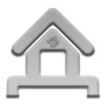
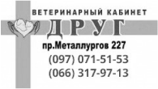

ПРО НАС
Ми - комунальне підприємство, впорядковане міській владі, співпрацюэмо з волонтерами та мешканцями Марiуполя для досягнення максимально можливого числа стерилізованих тварин в межах міста та пошуку родини для безпритульних собак.
Наша цiль - повернути їм віру в людей і дати шанс знову жити в родині, бути коханими.
- ПРИТУЛОК
 ПЕРЕТРИМКА
ПЕРЕТРИМКА- ВОЛОНТЕРСТВО
- БЛАГОДIЙНIСТЬ
НАШI МЕШКАНЦI
Їм час знайти дiм
Останні пожертвування
Анонім
250 грнНа лікування бездомних тварин
Благодійний збір ведеться з виключно відкритою звітністю! Результати діяльності на зібрані кошти Ви можете перевірити в меню ЗВІТИ
Також Ви можете допомогти руками, продуктами, медикаментами, господарчими товарами, а головне, увагою!
Докладний список Ви можете знайти за посиланням. Чекаємо Вас в гості! Ми завжди відкриті для співпраці і будемо вдячні за будь-яку допомогу!
ПРИХИСТИТИ — ПРОСТО!
Не бійся собак з притулку
Ми піклуємося про безпеку собак та їхніх майбутніх господарів. До адопції потрапляють лише соціалізовані хвостаті
Нерідко собаки потрапляють до притулку тому, що попередні господарі просто відмовилися від них. Забираючі собаку з притулку, ви рятуєте маленьке життя та отримуєте найвірнішого друга
Доросла собака піддається навчанню так само як і цуценя, від тебе потрібна любов і трохи часу щодня перший період адаптації
Всі тварини віддаються тільки в хороші умови і дуже добрі руки. Ми намагаємося не втрачати з поля зору наших підопічних і завжди з радістю чекаємо від них новин у вигляді фотографій, розповідей і відеороликів.
Щасливі Господарі, Веселі СОБАКИ

«Коли побачила Льолю, я вже знала що це “моя” собака. Спершу рідні вагались, але після 2-ох занять з кінологом зрозміли, що собака з притулку цілком нормальна»
Олена, щаслива господарка Льолі
Щасливі Господарі, Веселі СОБАКИ
«Коли побачила Льолю, я вже знала що це “моя” собака. Спершу рідні вагались, але після 2-ох занять з кінологом зрозміли, що собака з притулку цілком нормальна»
Олена, щаслива господарка Льолі
ВІДВІДАТИ «ЩАСЛИВА ТВАРИНА»
Ви можете знайти нас за адресою
м. Маріуполь, вул. Чукаріна, 1 з понеділка по п’ятницю,
або зателефонувати за номером (096) 497 46
46,
та надіслати e-mail email@gmail.com
Чекаємо Вас в гості!
НАШІ ПАРТНЕРИ
Хто нам допомагає
- 
- 
Звіти
Благодійний збір ведеться з виключно відкритою звітністю! Результати діяльності на зібрані кошти Ви можете перевірити в меню